Education
-
Haci Sabanci Anadolu Lisesi - Highschool (2017)
-
Kadir Has University - B.Sc. Electrical & Electronics Engineering (2022)
I graduated Kadir Has University as the top ranking student in department, faculty, and university with a 3.94 / 4.00 GPA. Also, my graduation project was selected as the best engineering design project in Kadir Has University.
-
Concordia University - Ph.D. Computer Science (cont.)
I started my Ph.D. education in January 2024. Currently, I have 5 published papers, and multiple papers that are in preparation and submission processes. I gave my proposal last month (November 2025) and I expect to graduate in December 2026 with a strong publication record. More information about my academic projects are in projects.
I graduated Kadir Has University as the top ranking student in department, faculty, and university with a 3.94 / 4.00 GPA. Also, my graduation project was selected as the best engineering design project in Kadir Has University.
I started my Ph.D. education in January 2024. Currently, I have 5 published papers, and multiple papers that are in preparation and submission processes. I gave my proposal last month (November 2025) and I expect to graduate in December 2026 with a strong publication record. More information about my academic projects are in projects.
Work Experience
-
(July 2020) Internship at Galaksity Smart City Technologies
Developed a smart card application for Testing Team, that can read, write, and edit information on Mifare Ultralight Cards.
-
(August 2021) Internship at Digital Transformation Office of the Presidency of the Republic of Turkiye
Developed 2 Brain-Computer Interface (BCI) and 1 AI-Modelled game prototypes. In the AI-Modelled game prototype, Generative Adversarial Networks (GANs) were used to create 3D models. These AI-designed models were used to develop an spaceship shooter game.
BCI game prototypes are based on NextMind headset that reads brain signals and converts into interactions in digital applications. Two game prototypes were developed with this technology, a puzzle-platform and a Tic-Tac-Toe game. These games were shared by the development team of the NextMind company in a blogpost (Announcement).
After the internship, I was invited to attend Teknofest 2021 (a traditional technology festival in Turkiye) to present my work to public.
 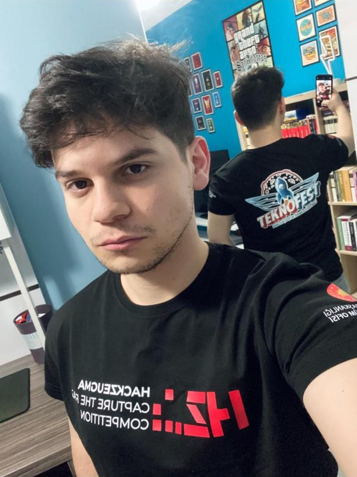
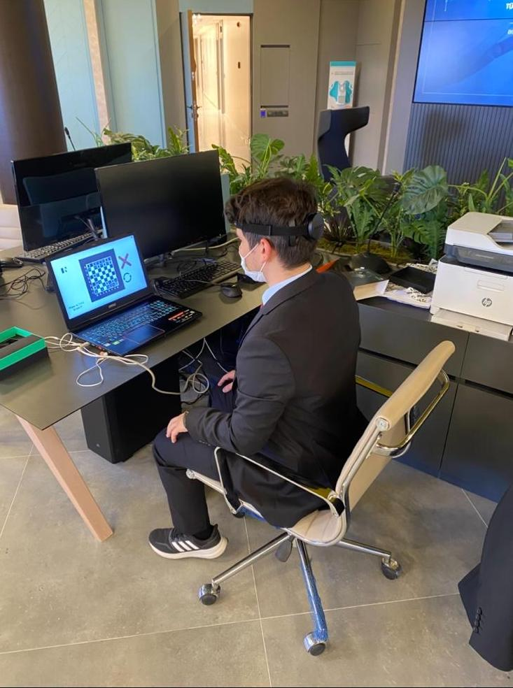
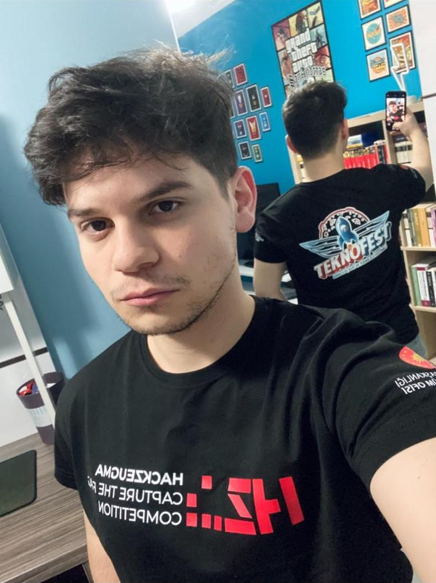
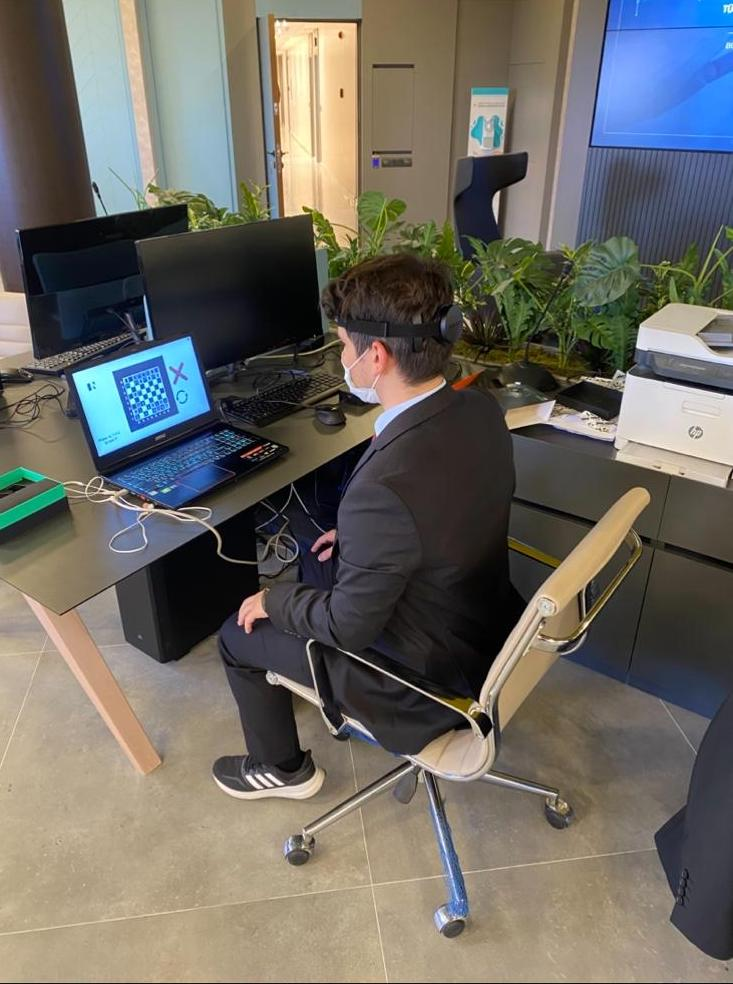
-
(June 2022 - June 2023) Game Developer at Servo Studios (a mobile game development company that is closed at June 2023)
I started working as a Game Developer. Worked on prototyping mobile games (development and 3D asset design), publishing processes on App Store (iOS) and Google Play Store (Android), advertising the published games, maintaining the company website, and entering interviews for new developer applications. I also worked closely with game designers from Moonee (mobile game publisher) and developed prototypes for the publisher tests. I stopped working there after 1 year to continue my education.
Here is the list of games I developed for Servo Studios. (Some of these games are not available online because the company is closed, but their information and videos are available in projects. Please contact me if you need a working version.)
- Reach the Space
- Tower Climber
- Sky Surfer
- Garbage Vacuumer
- Shoot & Cover
-
(January 2024 - Current) Teaching Assistant at Concordia University
During my education, I worked as a teaching assistant multiple times. For Introduction to Game Development and Advanced Game Development courses, I worked for 4 terms las lab demonstrator and 3 terms as marker. In my lab demonstrator sessions, I taught students how to develop games practically. In my marker positions, I evaluated student projects and assignments.
Publications
Authors: M. Gemici, A. Hatira, V. Phadnis, A.U. Batmaz
Authors: D. Doesburg, M. Gemici, A. U. Batmaz
Authors: M. Gemici, V. Phadnis, A.U. Batmaz
Authors: M. Gemici, W. Stuerzlinger, A. U. Batmaz
Authors: L. Voisard, A. Hatira, M. R. Bashar, M. Gemici, M. Sarac, M. Kereten-Oertel, A. U. Batmaz
Authors: M. Gemici, K. Korkmaz, N. T. Ayhan, S. Soylu, F. Guc, A. S. Ogrenci
Projects
You can see more information here about my personal and professional projects.Game Development Projects
Professional Projects
-
Reach the Space
A vertical endless runner developed for Servo Studios. Reach the Space challenges players to pilot a customizable ship as high as possible, dodging aerial and extraterrestrial threats while collecting coins and power-ups.
-
Tower Climber
For my second project at Servo Studios, I built upon the simplicity of my previous work but introduced a new reflex-based mechanic. Players must use precise timing to launch across and latch onto the opposite wall. The game features different styles of infinite towers and a fully customizable character, allowing players to mix and match various outfits and accessories.
-
Sky Surfer
For my third project at Servo Studios, I reimagined the mechanics of the hit game Subway Surfers within an aerial combat setting. Sky Surfer combines classic lane-based dodging with arcade shooter gameplay, challenging players to navigate tight city corridors while blasting through waves of enemy planes.
-
Garbage Vacuumer
Garbage Vacuumer is a successful hyper-casual title that has achieved over 10,000 downloads. I originally designed the core concept and gameplay, then collaborated with designers from the publisher Moonee to refine and polish the experience. Players are tasked with cleaning up clutter-filled cities, starting with a handheld vacuum and progressing to heavy machinery like trucks and helicopters. The game features a robust progression system where players manage resources to upgrade their Storage, Area, and Power to handle increasingly difficult debris.
-
Shoot & Cover
Shoot & Cover was my final project at Servo Studios, co-developed with Moonee. While the publisher provided design assets, I handled the full technical implementation. The game achieved a highly competitive $0.31 CPI (Cost Per Install) during market tests. Based on these strong results, Servo Studios decided to self-publish the title rather than proceeding with a publisher deal. After successfully delivering this project, I departed the company to advance my academic career.
Hobby Projects
-
The Wizard (Link)
The first game I developed with Faruk Güç after 1 month we started learning Unity.
The Wizard is the first game I ever developed. I built it with Faruk Güç after we had been learning Unity for just one month. It is a 2D action-adventure game that features elemental combat and even a challenging mini-boss fight. We even added a short cutscene! You have to be careful, if you attack a fire enemy with fire, for instance, they will heal instead of taking damage. This project was a fun challenge that launched my game development journey.


 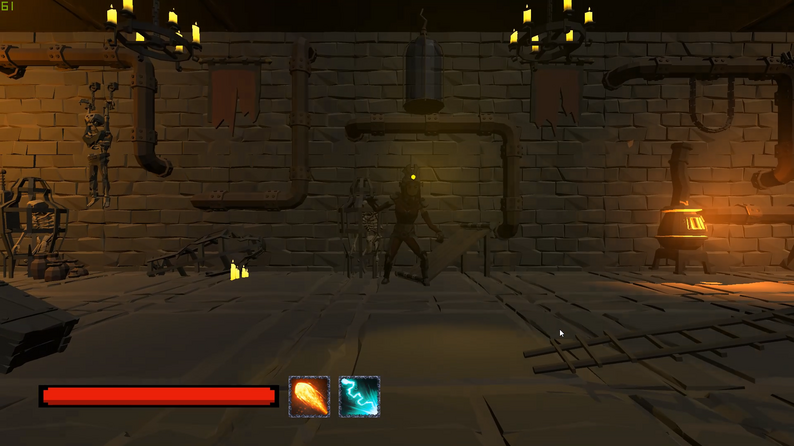
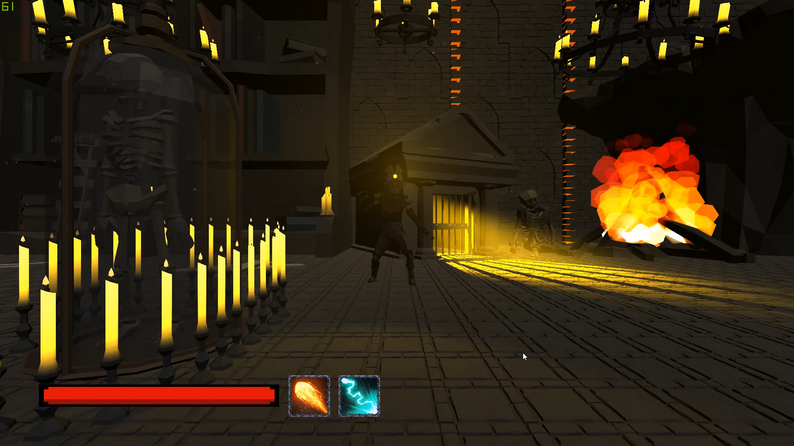
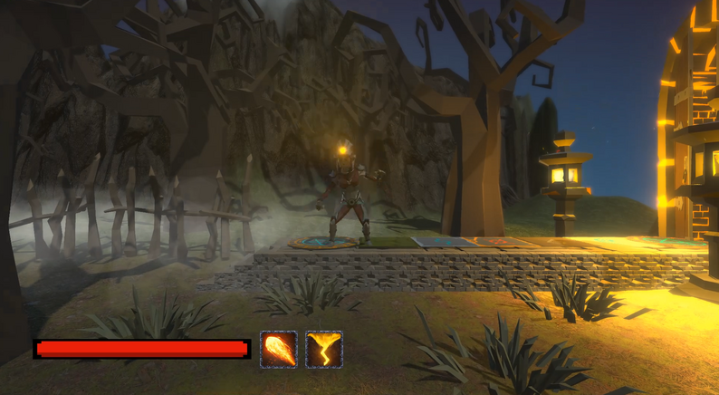
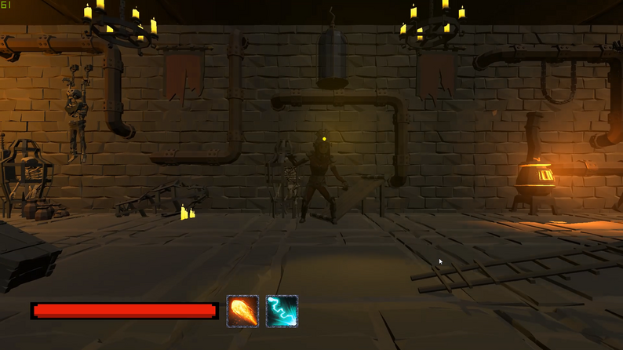
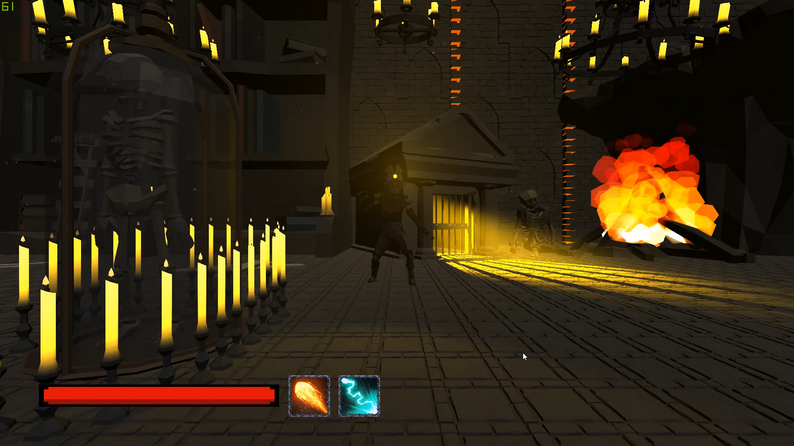
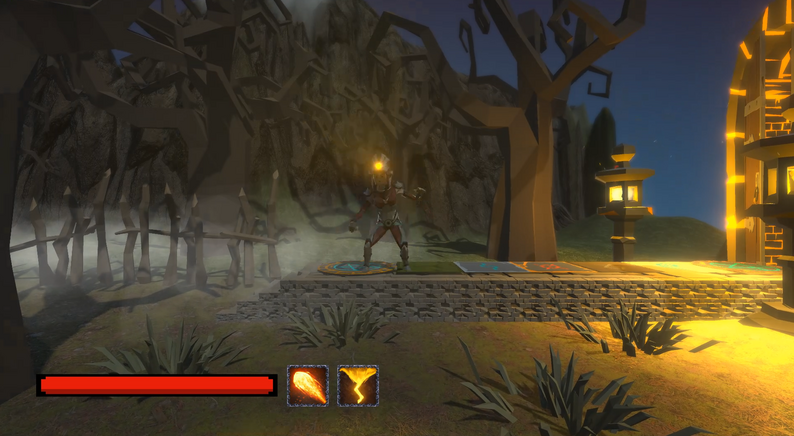
-
Castle Defender (Link)
Castle Defender is a first-person tower defense game I made as a student project to learn 3D modeling. I wanted to try something different with the genre by putting the player right in the action instead of just watching from above. You have to defend your castle from enemy waves using weapons like shotguns and grenade launchers, and use the coins you earn to buy more ammo. With its low-poly 3D style and a giant cannon to control, this game was a fun way for me to explore 3D design and new gameplay ideas.


-
The Arena (Link)
The Arena is a first-person fighting game I developed in collaboration with Faruk Güç as a semester project for my CE469 Game Programming course. Players engage in combat using a variety of weapon classes, including two-handed swords, spears, and sword-and-shield combinations, while utilizing environmental traps to gain a tactical advantage. The project features a fully explorable village and a custom-built arena, for which I created the 3D models and textures from scratch using Blender and Substance Painter. This project marked a pivotal moment in my career, as the technical and design skills I demonstrated directly led to my first job offer as a game developer.


 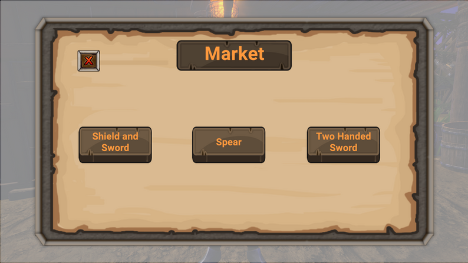
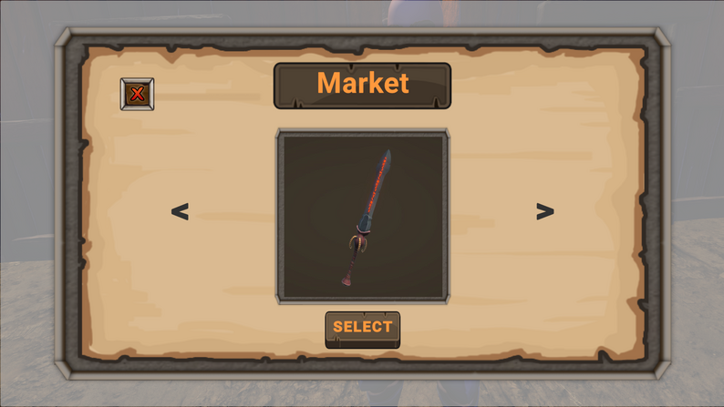
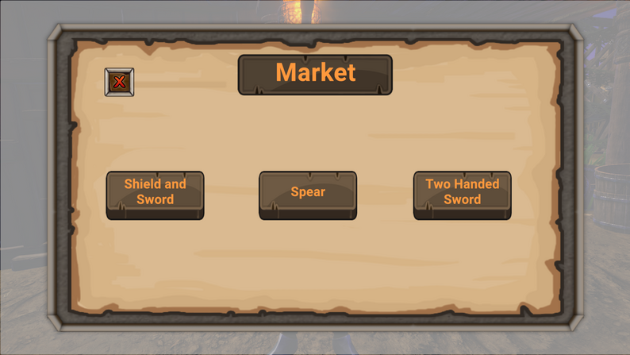
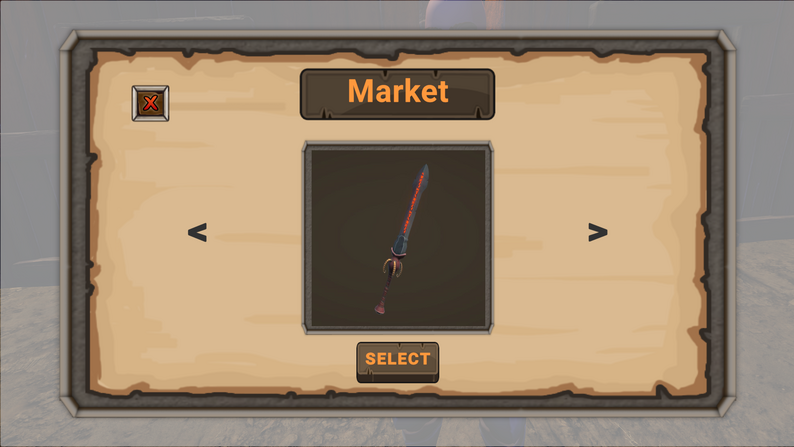
Internship Projects
-
Game Modelled by AI (Link)
Game Modelled by AI is an R&D project I developed during my internship to explore the potential of automating 3D asset creation for game pipelines. The goal was to reduce the dependency on manual modeling by leveraging machine learning algorithms to generate 3D meshes. Built using Unity, the project integrates Neural Sparse Voxel Fields (NSVF) and Polygen to generate all in-game models entirely through AI. It features a playable environment and a dedicated model viewer, demonstrating how AI can streamline the production workflow for developers.


-
Tic-Tac-Toe with Nextmind (Link)
Tic Tac Toe With NextMind is an experimental project I developed to explore the potential of Brain-Computer Interfaces (BCI) in gaming. Built in just a few days using Unity and the NextMind API, the game allows players to play entirely hands-free by focusing their visual attention on the screen. The NextMind device translates these brain signals into input, letting players place their marks simply by concentrating on a grid square. I was responsible for the entire development pipeline, including all programming and 3D modeling, demonstrating my ability to quickly adapt to and implement cutting-edge hardware SDKs.


-
Platformer Game with Nextmind (Link)
Platformer Game for NextMind is a hybrid-control puzzle platformer that combines traditional keyboard inputs with direct brain-computer interface (BCI) mechanics. While players use the keyboard for character movement, they must use the NextMind device to overcome obstacles by mentally focusing on them—lifting rocks, destroying barriers, and solving puzzles using only their brain signals. I developed this game using Unity and the NextMind API, handling all 3D modeling and programming myself. The project was selected for exhibition at Teknofest 2021 by the Digital Transformation Office of the Presidency of Turkey, where I was completing my internship.


 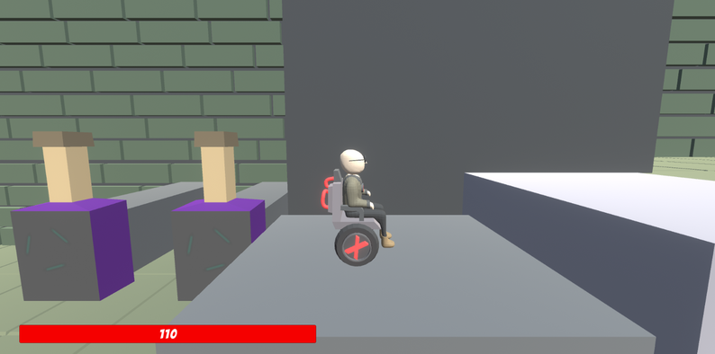
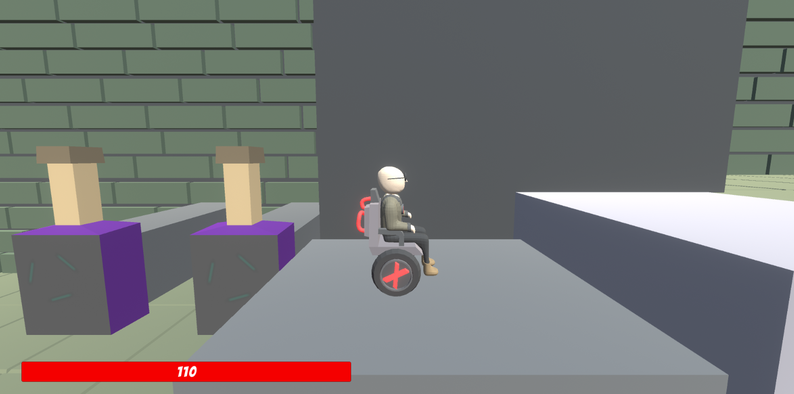
Academic Studies
-
MuscleNET: Smart Predictive Analysis for Muscular Activity
Authors: M. Gemici, K. Korkmaz, N. T. Ayhan, S. Soylu, F. Guc, A. S. Ogrenci
Award-Winning Undergraduate Graduation Project
MuscleNET is an intelligent training support system designed to prevent sport-related injuries and optimize workout efficiency for individuals exercising without professional supervision. Developed as my senior graduation project—which received the Best Project Award at the university—this system bridges the gap between wearable hardware and advanced machine learning to act as a digital spotter.
The core of the project is a custom wearable device I helped design using a MyoWare muscle sensor and an Arduino Nano, which collects real-time Surface Electromyography (sEMG) signals from the user's skin. These signals are transmitted via Bluetooth to a dedicated mobile application we developed, allowing users to monitor their muscle activity live.
Technical Approach & AI Implementation
The system goes beyond simple data logging by employing deep learning models to analyze the raw signal data in the cloud. We implemented a multi-stage AI pipeline:- Feature Extraction: We processed raw sEMG signals to extract time-domain features (such as Mean Absolute Value and Root Mean Square) to feed into our models.
- Injury & Quality Detection: We utilized Deep Neural Networks (DNN) to classify training quality, determining if a user is lifting too heavy, too light, or the ideal weight for their muscle development.
- Predictive Analysis: To forecast potential injuries before they happen, we implemented Long Short-Term Memory (LSTM) networks. This architecture analyzes the sequence of the last five training signals to detect fatigue patterns and warn the user to stop before an injury occurs.
Key Achievements:
- Achieved 85% accuracy in training quality prediction using SMOTE data augmentation techniques.
- Successfully integrated a complete IoT pipeline: Sensor → Mobile App → Cloud AI → User Feedback.
- Presented at the 2022 Innovations in Intelligent Systems and Applications Conference (ASYU).


-
Before hands disappear: Effect of early warning visual feedback method for hand tracking failures in virtual reality
Authors: M. Gemici, V. Phadnis, A.U. Batmaz
Overview: Current commercial VR headsets (like the Meta Quest 3) rely on camera-based tracking that is prone to failure in specific conditions. This project, funded by Google, shifts the paradigm from reactive error correction to proactive error prevention.
Methodology: I identified three critical failure states: Low-Intensity Light, Out-of-Vision Hands, and Self-Occlusion. I then developed a predictive algorithm using Unity and the Meta XR SDK to detect high-risk scenarios (e.g., ray-casting to detect when hands are about to overlap). When a risk is detected, a custom-designed visual alert appears in the user's field of view using a "World Fixed" positioning system to maintain visibility without breaking immersion.
Results: We conducted a rigorous within-subjects user study (N=18) comparing the system against a benchmark. The results were statistically significant:
- 83% reduction in tracking loss for "Out of Vision" scenarios.
- 62% reduction in tracking loss for "Self-Occlusion" scenarios.
- Usability Score (SUS): Improved from 46.25 (F-Grade) to 80.42 (A-Grade).
- Cognitive Load: Significantly reduced mental and physical demand across all tasks.
-
Gaze Analysis in Early Warning Visual Feedback System for Hand Tracking Failures in Virtual Reality
Authors: M. Gemici, A. Hatira, V. Phadnis, A.U. Batmaz
Overview: In our previous Google-funded research, we proved that "Early Warning" visual feedback significantly reduces hand-tracking failures. This second study, published in IEEE Access, utilizes eye-tracking technology to answer the critical question: Does showing these warnings distract the user?
Methodology: We replicated our object manipulation experiments using a Meta Quest Pro to leverage its precise eye-tracking capabilities. We recorded and classified Fixations and Saccades (rapid eye movements) to measure exactly how users distributed their visual attention between the "Task UI," the "Target Objects," and the "Warning Feedback." We analyzed three failure conditions: Low-Intensity Light, Out-of-Vision Hands, and Self-Occlusion.
Results:
- Non-Intrusive Design: We found that the warnings did not disrupt the user's focus on primary tasks. The "Attention Percentage" on task-critical objects remained consistent even when warnings were displayed.
- Habituation Effect: We observed a logarithmic decay in fixation duration. As users became familiar with the system, they processed warnings significantly faster, indicating that the system becomes less intrusive over time.
- Context-Aware Attention: Users allocated different levels of attention depending on the error type; for example, "Low-Light" warnings (which are unavoidable) received significantly more attention than "Out-of-Vision" warnings (which users could quickly correct).
- Study in progress...
- Study in progress...